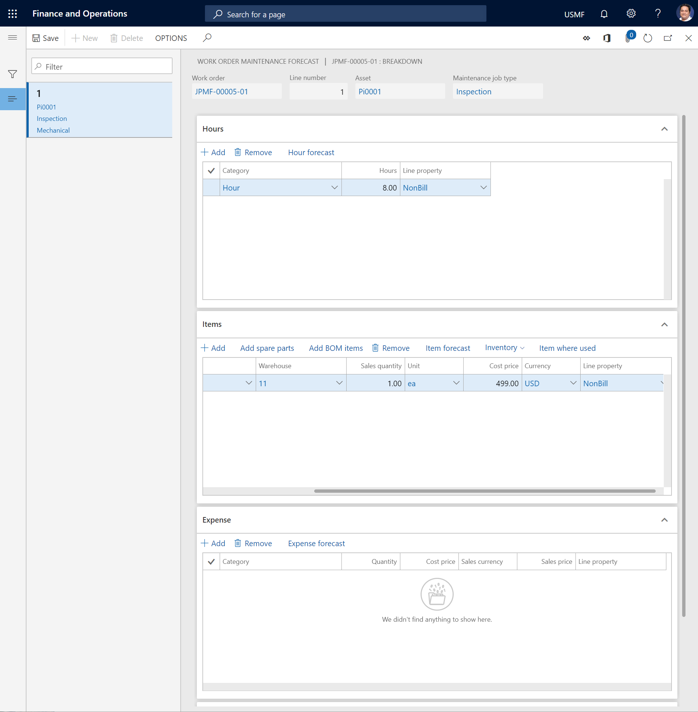

Maintenance forecasts
When you create a work order, you create work order jobs that have related assets and maintenance job types. When you select a maintenance job type that contains maintenance forecasts, the forecasts are automatically copied to the work order.
You might be able to add forecast lines to a work order or delete them from a work order. The setup of the work order lifecycle state, the related project type, and the stage rules that are related to the project type determine whether you can add or edit forecast lines. For more information about work order lifecycle states and related project stages, see Forecasts, work orders, and projects.
Select Asset management > Common > Work orders > All work orders or Active work orders.
Select the work order in the list, and then, on the Action Pane > Work order tab > the Project group, select Forecast. The Work order maintenance forecast page shows forecast lines from the maintenance job type that is selected on the work order job.
Add an hours forecast to a work order
On the Work order maintenance forecast page, select the work order job to add a forecast to.
On the Hours FastTab, select Add to create a new line.
In the Category field, select a category.
In the Hours field, enter the number of forecasted hours.
In the Line property field, select the type of charge that should be used on the line.
Add an items forecast to a work order
There are three ways to add items to a work order maintenance forecast. You can create lines for items (spare parts) that aren't included on the spare parts list or the asset bill of materials (BOM), you can select spare parts from the approved spare parts list, or you can select items from the asset BOM.
On the Work order maintenance forecast page, select the work order job to add a forecast to.
On the Items FastTab, add items to the maintenance forecast by using the appropriate method.
To create a line for a spare part that isn't on the spare parts list or the asset BOM, follow these steps:
- Select Add.
- In the Item number field, select the item.
- In the Sales quantity field, enter the quantity.
- In the Unit field, select the unit of measure for the quantity.
- In the Cost price and Currency fields, enter appropriate values.
- In the Line property field, select a line property.
- To change the list of dimensions that is shown on the item lines, select Inventory > Display dimensions, select the dimensions, and then set the Save setup option to Yes.
To add a spare part from an approved spare parts list, follow these steps:
- Select Add spare parts.
- Select the spare part, and edit the related information as you require.
- Select OK.
To add an item from the asset BOM, follow these steps:
- Select Add BOM items.
- Select the item, and edit the related information as you require.
- Select OK.
To get an overview that shows where the item on the selected line is used in relation to assets, maintenance job type defaults, spare parts, and work orders in Asset Management, select Item where used. For more information about this overview, see Item where used.
Add an expense forecast to a work order
On the Work order maintenance forecast page, select the work order job to add a forecast to.
On the Expense FastTab, select Add to create a line.
In the Category field, select a category.
In the Quantity field, enter the quantity.
In the Cost price, Sales currency, and Sales price fields, enter appropriate values.
In the Line property field, select the type of charge that should be used on the line.
Note
The Maintenance forecast totals FastTab shows an overview of the number of lines that have been created, for the selected work order job and for the work order, on each FastTab. It also shows the total forecasted work hours for the work order job and the work order.
The illustration below shows an example of the Work order maintenance forecast page.

Automatic update of work order forecasts
If hour costs, item costs, and expenses are updated in other modules in Microsoft Dynamics 365 for Finance and Operations, work order forecasts in Asset Management can automatically be updated to reflect those changes. This capability helps guarantee that the latest cost prices are always used in your work order forecasts. You can also do similar updates for maintenance job type forecasts.
Select Asset management > Periodic > Forecast > Update work order forecast.
In the Update work order forecast dialog, on the Records to include FastTab, you can add selections regarding specific work orders or work order jobs, as you require. Click Filter to make the relevant selections.
On the Run in the background FastTab, you can set up the automatic update as a batch job, as you require.
Select OK to start the forecast update.
The illustration below shows an example of the Update work order forecast dialog.